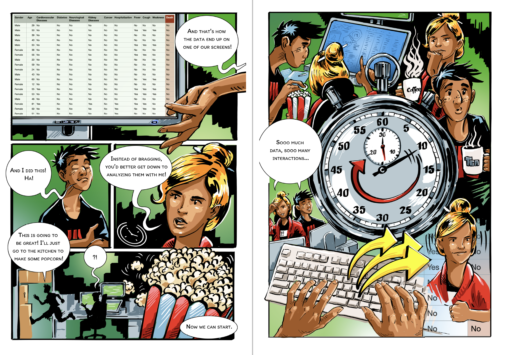
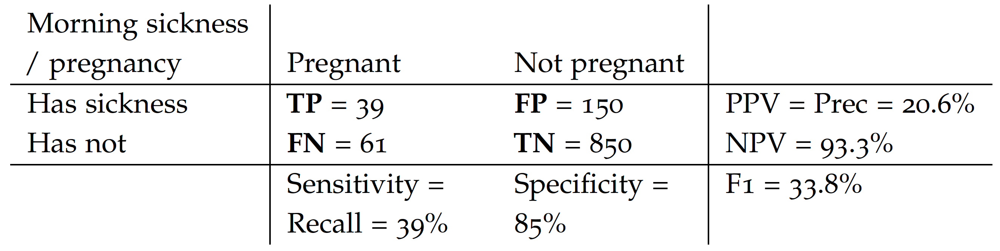
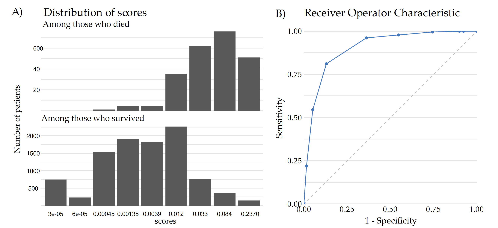
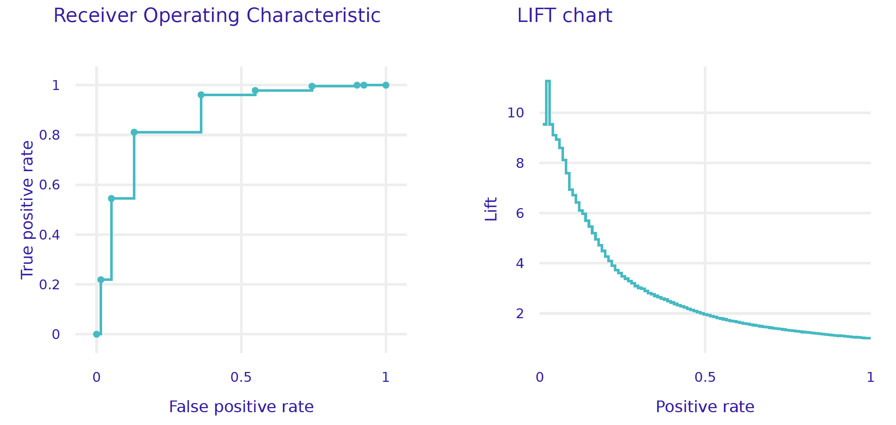
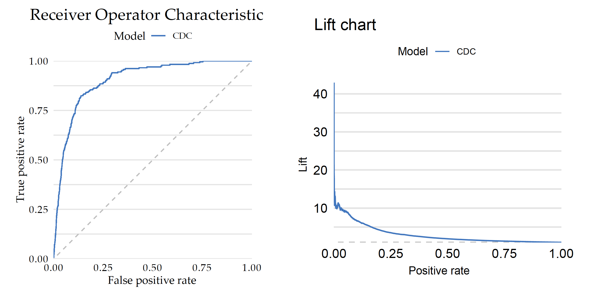

explainer_cdc = dx.Explainer(
model = model_cdc,
data = covid_summer.drop("Death", axis=1),
y = covid_summer.Death,
model_type = "classification",
label = "cdc"
)Step 2. Model Performance

A key element in developing a predictive model, is to specify how we are going to measure the predictive performance of the model. The choice of model performance measures depends on the specific predictive problem and the assumptions we make about the outcome distribution. Below is a brief summary of classification models, while a more comprehensive description can be found in the EMA book.
The typical structure of the problem is as follows. In the training data for each observation we have a variable (the so-called target) taking two possible values (hence the name binary classification model), one class of which is often distinguished as “positive”. Based on the observations, the predictive model determines a certain numerical score. If this score is greater than a certain critical value then it is assumed that the model has predicted the positive class, if lower than the score then the model has predicted the opposite class.
The results of the model’s on the test data can be commonly summarized by a \(2\times 2\) contingency table with possible results coded as True Positive, True Negative, False Positive, and False Negative.
For the sake of a simple example, let’s consider the issue of predicting whether a woman is pregnant based on a simple model that predicts pregnancy if someone has morning sickness. Positive class is the pregnancy, while negative class is no pregnancy. True and False describe whether the test result is correct or not.
Below is an example of such a table for a~simple ,,morning sickness’’ test for the pregnancy. This table is based on GetTheDiagnosis data.

Based on such a contingency table, the most commonly used measures of performance for classification problems are:
Note that in the Covid-mortality-risk-assessment problem, we are not interested in the binary prediction survived/dead, but rather in the quality of the ranking of risk scores. Relative risks can be used to do a triage, to determine which people need a response most quickly, such as a vaccine.
For such types of problems, instead of a contingency table, one looks at Receiver Operating Characteristic (ROC) curve, which illustrates the trade-off between the true positive rate (sensitivity) and the false positive rate (1-specificity) at different classification thresholds. The curve’s shape and the area under it (AUC-ROC) provide insights into the classifier’s discrimination ability and overall predictive accuracy.
Figure 2 shows how the ROC curve and AUC measure is constructed for the Covid data. Panel A shows the distribution of scores obtained from the CDC model for the test data divided by the survival status. By taking different cutoffs, one can turn such numerical scores into binary decisions. For each such a split, the Sensitivity and 1-Specificity can be calculated and drawn on a plot. Panel B shows 10 points corresponding to different splits. The ROC curve is the piecewise line connecting these points and the AUC is the area under this curve. The AUC takes values from 0 to 1, where 1 is the perfect ranking and a purely random ranking leads to the AUC of 0.5.

AUC is a widely used performance measure because it offers several advantages in evaluating the performance of a binary classifier, such as robustness to class imbalance, threshold invariance, evaluation of the overall classification ability and intuitive interpretation (AUC represents the probability that a randomly selected positive instance will have a higher predicted probability than a randomly selected negative instance). The higher the AUC value, the better the classifier’s ability to rank positive instances higher than negative instances.
Python snippets
There are many measures for evaluating predictive models, and they are implemented in sklearn.metrics Python module. Below we will show the most common measures calculated by default by the dalex package.
First, we need an explainer with specified validation data (here covid_summer) and the corresponding response variable.
Model exploration starts with an assessment of how good is the model. The model_performance() function calculates a set of measures for a specified type of task, here classification.
performance_cdc = explainer_cdc.model_performance(cutoff=0.1)
performance_cdc
Note: The explainer knows whether the model is trained for classification or regression task, so it automatically selects the right performance measures. This can be overridden if needed.
The plot function draws a graphical summary of the model performance. With the geom argument, one can determine the type of chart.
performance_cdc.plot(geom = "roc")
performance_cdc.plot(geom = "lift")
R snippets
There are many measures for evaluating predictive models, and they are implemented in various R packages (i.e. ROCR, measures, mlr3measures). For simplicity, in this example we show only model performance measures implemented in the DALEX package.
First, we need an explainer with specified validation data (here covid_summer) and the corresponding response variable.
explainer_cdc <- DALEX::explain(model_cdc,
predict_function = function(m, x) m(x),
data = covid_summer,
y = covid_summer$Death == "Yes",
type = "classification",
label = "CDC")Model exploration starts with an assessment of how good is the model. The DALEX::model_performance function calculates a set of measures for a specified type of task, here classification.
mp_cdc <- model_performance(explainer_cdc, cutoff = 0.1)
mp_cdc
# Measures for: classification
# recall : 0.2188841
# precision : 0.2602041
# f1 : 0.2377622
# accuracy : 0.9673
# auc : 0.906654Note: The default implementation of AUC is different in R and Python. Therefore, the results in the snippets for R will differ from those on the previous page.
The S3 generic plot function draws a graphical summary of the model performance. With the geom argument, one can determine the type of chart.
plot(mp_cdc, geom = "roc")
plot(mp_cdc, geom = "lift")